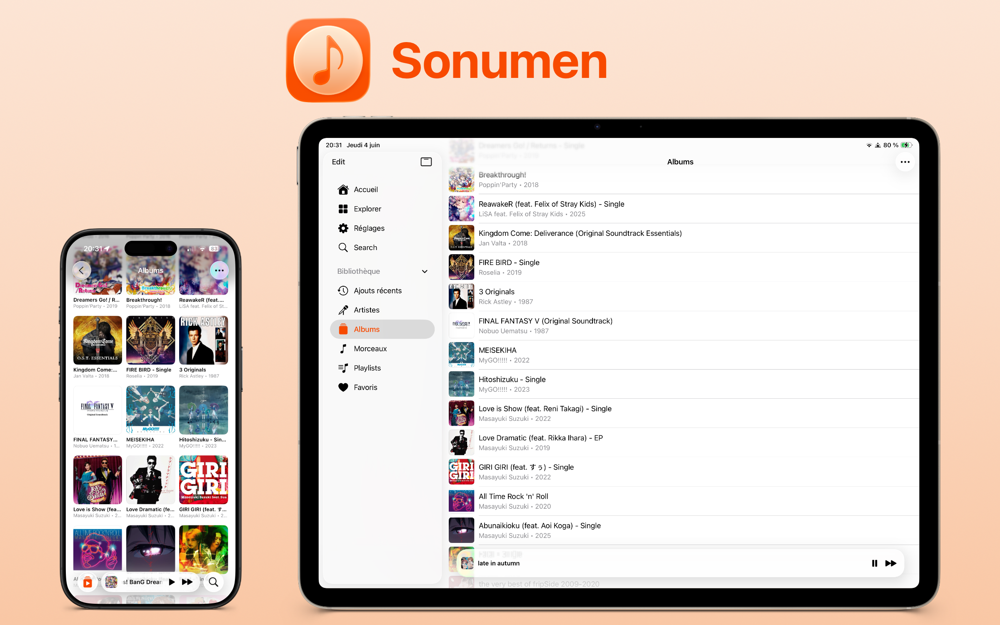
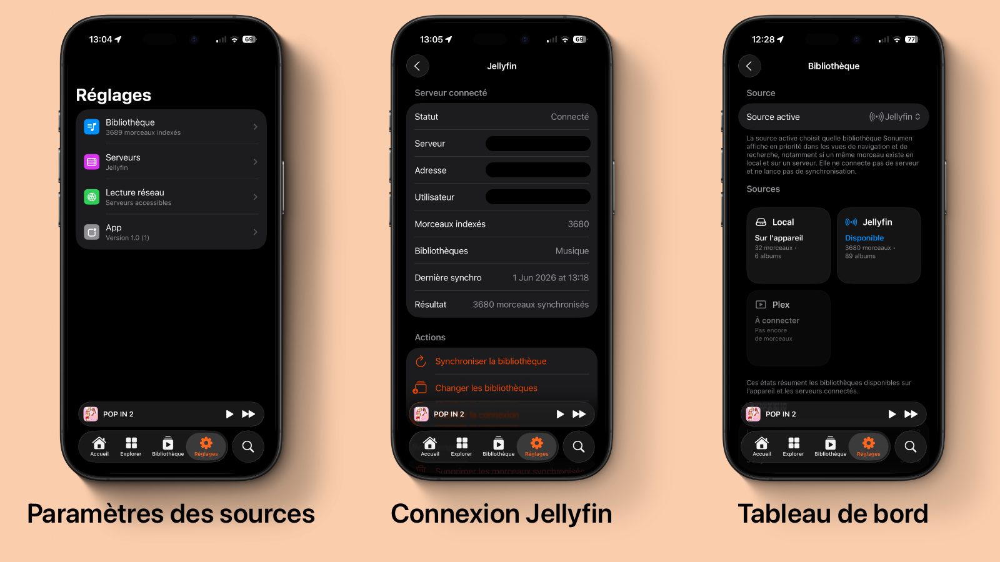
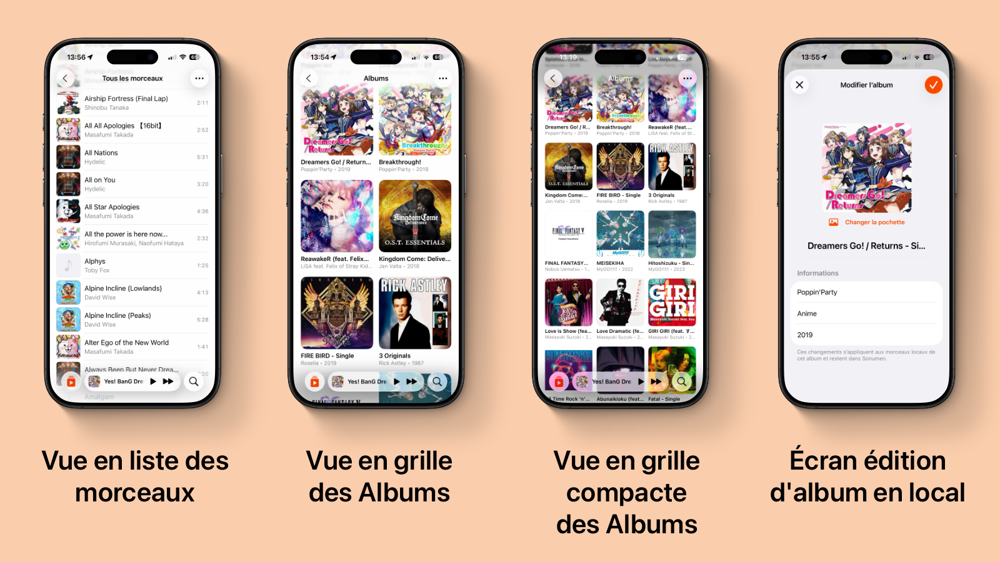
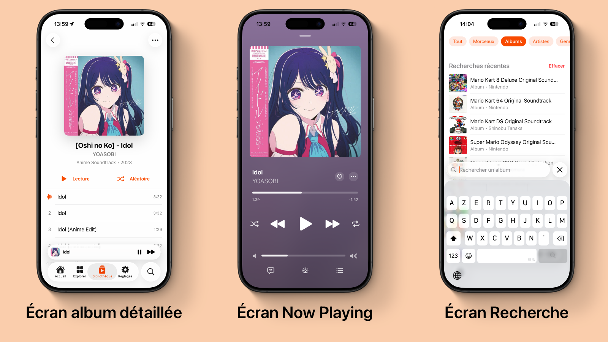

Sonumen - Lecteur musical iOS pour bibliothèques locales et serveurs personnels
Prototype iOS avancé pensé pour retrouver une expérience musicale premium avec des sources personnelles : fichiers locaux, Jellyfin et Plex.

Résumé du projet
Sonumen est un prototype iOS de lecteur musical personnel. L'idée est de retrouver une expérience proche des grands lecteurs musicaux, mais appliquée à une bibliothèque que l'utilisateur contrôle : morceaux importés localement, serveur Jellyfin auto-hébergé ou serveur Plex.
Le projet ne cherche pas à reproduire un service de streaming. Il explore plutôt une question précise : comment proposer une interface musicale très soignée tout en laissant l'utilisateur choisir où vivent réellement ses fichiers.
Pourquoi ce projet
Le besoin vient d'une frustration simple : les solutions personnelles donnent souvent beaucoup de liberté, mais avec une expérience mobile moins fluide ou moins finie que les apps musicales grand public. Sonumen part de cette tension entre contrôle de sa bibliothèque et qualité d'expérience.
L'objectif est donc de construire un lecteur iOS capable de gérer plusieurs sources sans que l'interface devienne technique ou dispersée. L'utilisateur doit pouvoir écouter, retrouver, organiser et reprendre sa musique sans ressentir la complexité des sources derrière l'application.
Architecture & sources musicales
L'application repose sur une architecture par sources musicales. Chaque source peut charger sa bibliothèque et exposer des morceaux dans un modèle commun, ce qui permet d'unifier l'expérience côté interface.
- Bibliothèque locale : import de fichiers audio depuis l'iPhone ou l'iPad
- Jellyfin : connexion à un serveur auto-hébergé, sélection de bibliothèques et synchronisation
- Plex : connexion à un serveur personnel et récupération des bibliothèques musicales
- Modèle commun : morceaux, albums, artistes, playlists, favoris et historique regroupés dans une même logique
Cette approche rend le projet plus évolutif : l'interface n'a pas besoin d'être réécrite pour chaque source, et la logique de lecture peut rester cohérente entre fichiers locaux et serveurs personnels.

Réglages dédiés aux sources musicales : bibliothèque locale, serveur Jellyfin et serveur Plex.
Lecture, bibliothèque et persistance
La partie technique ne se limite pas à afficher des morceaux. Sonumen gère une vraie couche de bibliothèque avec import, métadonnées, artworks, favoris, playlists, historique de lecture et état de lecture.
- Lecture audio via AVFoundation
- Import de fichiers audio compatibles et détection des doublons
- Extraction et modification des métadonnées de morceaux
- Gestion des artworks intégrés ou personnalisés
- Favoris, playlists utilisateur et historique persistés localement
- Gestion des erreurs : fichier manquant, source distante indisponible, lecture impossible
Une attention particulière a été portée aux cas moins visibles mais importants dans un lecteur musical : ne pas casser la lecture quand une source réseau devient inaccessible, éviter les doublons à l'import, et conserver une bibliothèque cohérente dans le temps.

Bibliothèque musicale avec navigation entre morceaux, albums et contenus importés.
Interface & expérience mobile
L'interface combine UIKit pour le shell principal et certaines transitions, avec SwiftUI pour plusieurs écrans de contenu. Ce choix permet de garder une base mobile robuste tout en itérant rapidement sur les vues.
- Tab bar moderne avec mini-player persistant
- Transition custom entre mini-player et écran now playing
- Écran de lecture plein écran avec artwork, contrôles, favoris, file d'attente et options de lecture
- Recherche, navigation par albums/artistes, playlists et morceaux récents
- Intégrations iOS natives déjà bien avancées : commandes système, player externe, widgets et Live Activity
- Réglages dédiés aux sources locales, Jellyfin et Plex
Le travail UI porte surtout sur la sensation d'usage : donner l'impression d'une app musicale native, fluide et cohérente, sans transformer les fonctionnalités serveur en interface d'administration. Les prochaines itérations concernent surtout le polish UX de ces points d'entrée et leur cohérence avec le reste de l'app.

Mini-player persistant et transition vers l'écran now playing plein écran.
État actuel
Sonumen est aujourd'hui un prototype avancé et compilable. Les briques principales sont présentes : bibliothèque locale, lecture, persistance, favoris, playlists, historique, réglages, Jellyfin et Plex. Le projet reste cependant en phase de validation produit et technique avant d'être considéré comme une app finalisée.
- Application iOS native en Swift, UIKit et SwiftUI
- Environ 90 fichiers Swift dans le projet
- Build simulateur validé avec Xcode
- Tests unitaires présents sur la bibliothèque, la recherche et la persistance
Suite envisagée du projet
Mon objectif final est d'amener Sonumen vers l'App Store. Avant cette étape, le projet doit passer par une phase de stabilisation : tests sur de vraies bibliothèques, validation des connexions Jellyfin/Plex, polish UI, fiabilité de la lecture réseau et clarification du positionnement produit.
La suite logique serait ensuite une phase TestFlight pour recueillir des retours d'utilisateurs réels, puis une préparation de publication App Store : fiche produit, captures, politique de confidentialité, wording clair et communication de lancement.
Ce que ce projet m’a permis de développer
- Une architecture iOS capable d'unifier plusieurs sources de données musicales
- Une meilleure maîtrise d'AVFoundation, de la persistance locale et des cas d'erreur audio
- Une approche produit autour d'une app personnelle mais pensée pour une diffusion plus large
- Un travail d'interface mobile axé sur la fluidité, la continuité de lecture et la finition